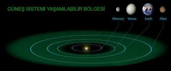

|

Yaşanabilir Bölge (Habitable Zone)
Yaşanabilir Bölge, bir yıldızın çevresinde yer alan ve yüzeyinde sıvı suyun var olabileceği sıcaklığa sahip bölgedir. Bu kavram, yaşamın temel
bileşenlerinden biri olan suyun varlığını esas alır. Çünkü bildiğimiz kadarıyla yaşamın oluşması ve devam etmesi için suyun sıvı halde bulunması
gereklidir. Bir gezegen yıldızına çok yakınsa yüzeyi aşırı ısınır ve su buharlaşır; çok uzaktaysa donarak buz haline gelir. Bu iki uç durumun arasında
kalan kuşak, yani ne çok sıcak ne de çok soğuk olan alan, “yaşanabilir bölge” olarak tanımlanır.
Bu bölgenin konumu her yıldız için farklıdır. Örneğin Güneş benzeri bir yıldızın yaşanabilir bölgesi, Dünya’nın bulunduğu mesafeye yakın bir yerdedir.
Daha küçük ve soğuk yıldızlarda bu bölge yıldıza çok daha yakındır, çünkü bu tür yıldızlar daha az enerji yayar. Daha büyük ve sıcak yıldızlarda ise
yaşanabilir bölge çok daha uzak bir mesafeye kayar.
Yaşanabilir bölge yalnızca sıcaklıkla değil, gezegenin atmosferiyle de yakından ilişkilidir. Bir gezegenin atmosferi yeterince kalınsa, ısıyı hapsederek
sıcaklığı dengede tutabilir. Böylece yıldızına biraz daha uzak olsa bile yüzeyinde sıvı su barındırabilir. Atmosferin kimyasal bileşimi de büyük önem taşır;
örneğin karbondioksit, su buharı ve metan gibi gazlar sera etkisi yaratarak yüzey sıcaklığını belirler.
Bilim insanları, Güneş Sistemi dışındaki gezegenlerde yaşam olasılığını değerlendirirken genellikle bu bölgeyi esas alır. Kepler-452b, Proxima Centauri
b ve TRAPPIST-1 sistemindeki bazı gezegenler, yaşanabilir bölgede bulundukları için dikkatle incelenmektedir. Ancak yaşanabilir bölgede bulunmak, bir
gezegenin mutlaka yaşam barındırdığı anlamına gelmez. Sıvı suyun bulunması sadece temel bir ön koşuldur; yaşamın oluşabilmesi için atmosfer, manyetik alan,
jeolojik denge ve kimyasal bileşim gibi birçok faktörün de uygun olması gerekir.
Sonuç olarak yaşanabilir bölge, evrende yaşam arayışının merkezinde yer alan bir kavramdır. Bu bölge, hangi gezegenlerin yaşamı destekleyebileceğini
anlamak için temel bir referans noktası sağlar. Bilim insanları her yeni gezegen keşfinde önce onun yıldızına olan uzaklığını inceleyerek, yaşanabilir
bölgede olup olmadığını belirlemeye çalışır. Çünkü bu bölge, evrende “yaşamın izine rastlama ihtimali”nin en yüksek olduğu yerdir.
|